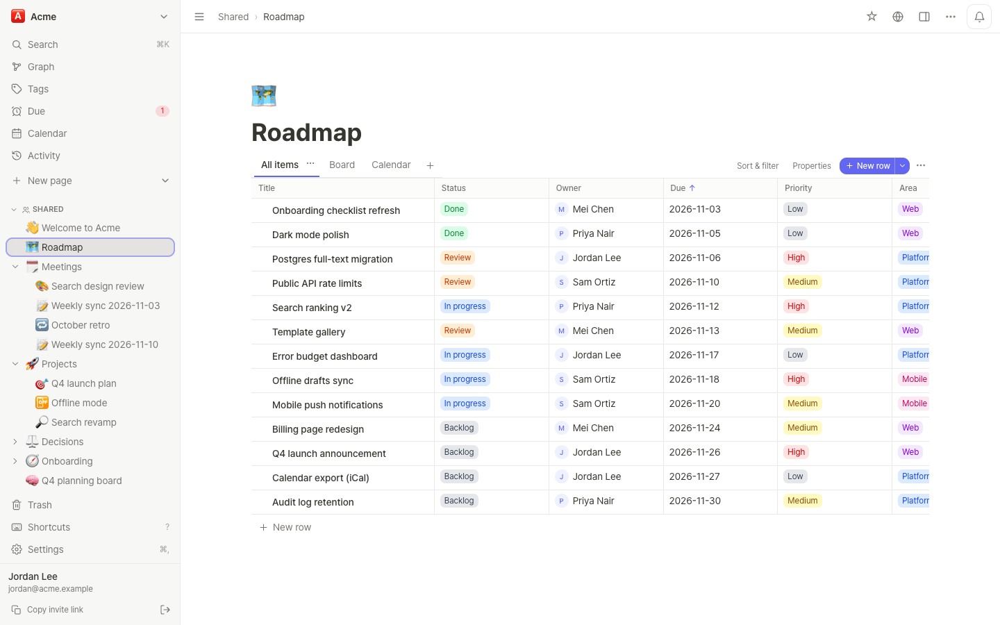
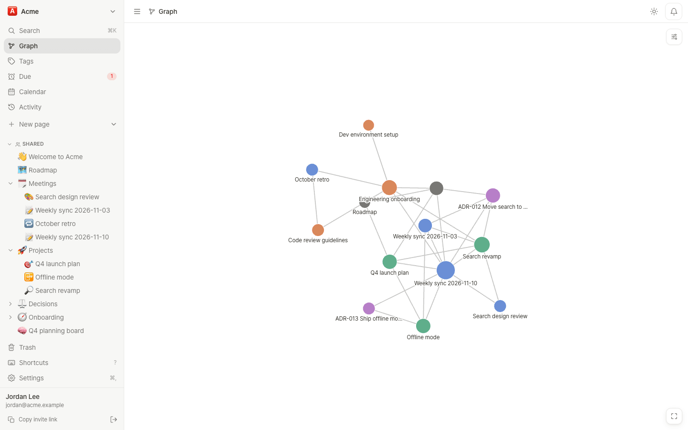
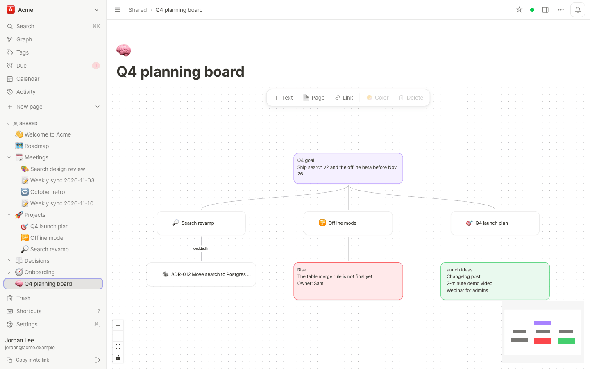
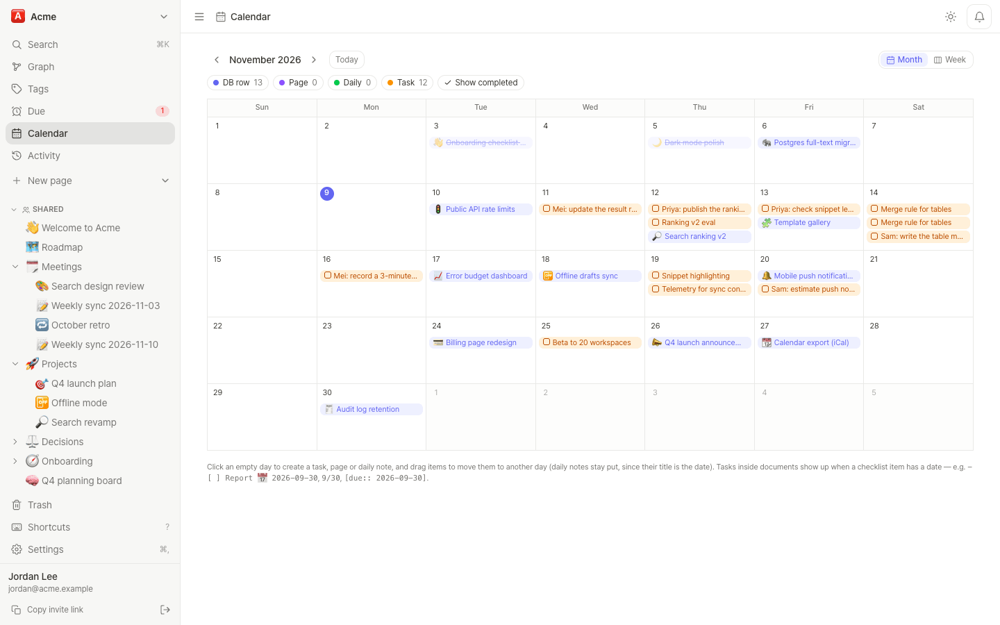

v0.9.0 MIT · self-hosted
Team notes your AI agents can read and write
Notion-style databases and Obsidian-style links, graph and JSON Canvas in one self-hosted app, with real-time collaboration and a built-in MCP server for AI agents. Every feature is free.
Self-host in 5 minutes (Docker with the Compose plugin)
git clone https://github.com/PROVE1352/inkling.git
cd inkling
cp .env.example .env
# set POSTGRES_PASSWORD in .env, then
docker compose up -d
./deploy/signup-key.sh new "first admin"
# open http://localhost:3000/register and paste the key
Tour
Inkling in 40 seconds
Features
Databases and linked notes on one server
Organize work in tables and boards the way Notion does, and connect documents with links the way Obsidian does, in the same workspace.
Databases with five views
Table, board, calendar, gallery and timeline views over the same rows, each with its own sort, filter and grouping.
- Text, number, select, multi-select, date, checkbox, person, URL, relation and rollup properties
- Row templates, CSV and XLSX import and export
- Agents query and update rows by property name


Links, graph and canvas
[[wikilinks]] with autocomplete, backlinks and unlinked mentions in the right panel, a workspace graph and a local graph.
- Infinite canvas compatible with Obsidian's JSON Canvas (
.canvas) - Query blocks: a Dataview subset (
TABLE,LIST,TASK) that stays live #tags,@mentionsand daily notes


Tasks and due dates
A checklist item with a date becomes a task. Tasks across the workspace show up in the Due view and on the calendar, databases have a calendar view of their own, and due dates can be subscribed to as an iCal feed.

Block editor
Slash menu, tables, code blocks, checklists, callouts, KaTeX math, images and file drops. Version history with named snapshots.
Real-time editing
Co-editing with Yjs: live cursors and presence, and offline edits merge when you reconnect.
Workspaces and guests
Owner, admin and member roles, private pages, per-page levels, and guests who see only the pages shared with them.
Edit locks
Lock a page tree to its owner and chosen editors. Agents can be limited to commenting or reading, separately from people.
Import and export
Notion export zips, Markdown and zip with front matter and [[links]], PDF export, Slack and Discord webhooks.
English and Korean
The UI comes in English and Korean, installs as a PWA, and has light and dark themes.
For agents
An MCP server built into the app
Connect Claude Code, claude.ai or any MCP client with OAuth 2.1. Each person connects their own account, so an agent sees only what that person can see. A connection is read only or read and write, and there is no permanent-delete tool.
› find_context(query: "launch checklist status page")
2 result(s) for "launch checklist status page", ~410/3500 tokens
<untrusted_content source="find_context">
[1] Launch plan › Checklist
(page 7c1e…; §checklist v=4f2a9c01b3de; can: read,comment,edit)
- [x] Pricing page copy
- [ ] Status page, owner Sam Ortiz, due 2026-11-20
- [ ] Changelog post
[2] Weekly sync 2026-11-03 › Decisions
(page 91ab…; §decisions v=0d3e5b7a9c12; can: read,comment,edit)
Ship the status page before the launch, not after.
Also relevant (not shown):
- Onboarding (page 3f0c…): §accounts ~180 tok
</untrusted_content>
Next: read_page(pageId, section=anchor) for a full section; …On a 5,000-page benchmark: 2,254 → 624 mean tokens per question, 3.68 → 1.00 tool calls. Output abridged, ids shortened.
› patch_section(pageId: "7c1e…", section: "checklist", mode: "append",
markdown: "- [ ] Changelog post", baseVersion: "4f2a9c01b3de")
Conflict: Section "checklist" changed since baseVersion 4f2a9c01b3de;
nothing was written. Merge your edit into the current content and retry
with baseVersion 8b61d0e2a7f4.
Current §checklist (v=8b61d0e2a7f4):
- [x] Pricing page copy
- [x] Status page, owner Sam Ortiz
› patch_section(…, baseVersion: "8b61d0e2a7f4")
Done (append): §checklist is now v=c27a90f13e56.Changing one sentence costs about 222 tokens instead of about 2,415 for read + replace. A person typing in the same section keeps their text.
› changes_since(cursor: "…")
2 changes in 2 pages.
<untrusted_content source="changes">
page "Launch plan" 7c1e… (by Priya Nair)
modified checklist (Checklist)
- - [ ] Status page, owner Sam Ortiz
+ - [x] Status page, owner Sam Ortiz
page added: "Weekly sync 2026-11-10" 2b9d… (by Jordan Lee via Claude Code)
</untrusted_content>
next cursor: …Store the cursor with the agent's notes and call again next session. Edits made through an agent are labelled "<person> (via <app>)" here, in history and on the Activity screen.
› get_instructions(workspaceId: "…")
<instructions page="…" title="Rules for agents" mode="always">
Write meeting notes under Meetings/. Do not edit pages under Finance/.
</instructions>
› patch_section(pageId: "a40d…", section: "q4", …)
"Q4 budget" is locked for agents (comment only). A person must make this
edit in the web app; you can add a comment with the suggested change.Page text reaches agents marked as untrusted data, and injection-like text is flagged. That is a mitigation; the actual limits are edit locks, connection scopes and per-workspace agent blocks.
−72%
tokens per question with find_context on a 5,000-page benchmark
~222 tok
to change one sentence with patch_section, instead of ~2,415
6/6
scenarios where a person typing in the patched section keeps their text
0
permanent-delete tools. trash_page can be undone for 30 days


Connect Claude Code, then run /mcp → inkling → Authenticate
claude mcp add --transport http inkling https://notes.example.com/mcpInstall
One docker compose stack
Postgres, the app and a backup sidecar, with an optional Caddy overlay for automatic HTTPS. The prebuilt image ghcr.io/prove1352/inkling runs on amd64 and arm64, so even a 1 GB server does not have to build anything.
Get the compose files and set .env
You need Docker with the Compose plugin and, for HTTPS, a domain whose DNS points at the server.
git clone https://github.com/PROVE1352/inkling.git && cd inkling
cp .env.example .env
# PUBLIC_URL=https://notes.example.com DOMAIN=notes.example.com
# POSTGRES_PASSWORD=<long random string> BACKUP_PASSPHRASE=<keep a copy off the server>Start it behind Caddy
Caddy obtains and renews the certificate. Migrations run when the app boots.
docker compose -f compose.yaml -f deploy/compose.caddy.yaml up -dCreate the first account
Signup needs a key by default. The first account to register becomes the site admin; more keys can be issued from the Admin page.
./deploy/signup-key.sh new "first admin"
# Signup link: https://notes.example.com/registerdocker compose pull app and a restart. See Operations and Backup.
- It needs PostgreSQL (no SQLite mode) and runs as a single instance.
- There are no native desktop or mobile apps; the web app installs as a PWA.
- It is a young project with a small user base, written with heavy use of AI coding agents and then reviewed for concurrency, resource use and security. Open problems are listed in Known issues.
Documentation
Docs
User guide
For people using a server someone else runs. Also in 한국어.
MCP connector
Connecting Claude and other clients, the tools, and a guide for agents.
Operations
Deployment checklist, upgrades, the status summary and database tuning.
Backup and restore
Schedules, encryption, retention, restore tests and off-site copies.
REST API
The REST contract: auth, pages, collections, the change feed and more.
All docs
Templates, query blocks, webhooks, plugins, vault sync, architecture, roadmap.